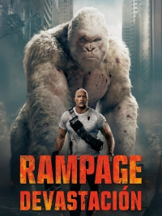
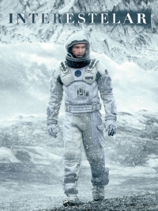
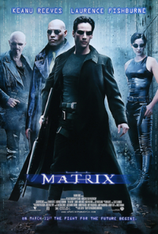

Nayim Maikel Rodríguez Moudabbes
Soy estudiante de la Universidad Tecnológica de Panamá en la carrera de Lic. en Ingeniería de Software. Me interesa el desarrollo de software, las bases de datos y la programación en general.
En mi tiempo libre disfruto entrenar en el gimnasio, jugar voleibol y explorar proyectos que combinen creatividad y lógica.
Visita mi sitio web favorito:
Amazon
Mis libros favoritos
El Psicoanalista
Los Juegos del Hambre vol.1
Dinero Fácil en un Camino Difícil
Di Hola
Dominó
Mis pasatiempos
Entrenar en el gimnasio
Jugar voleibol
Programar
Jugar videojuegos
Escuchar música
Mis cualidades
Responsable
Me comprometo con mis metas y proyectos.
Creativo
Busco siempre nuevas ideas y soluciones.
Perseverante
No me rindo fácilmente ante los retos.
Colaborador
Me gusta trabajar en equipo.
Organizado
Manejo bien mi tiempo y mis actividades.
Mis películas favoritas
Acción
John Wick
Rampage

Ciencia Ficción
Interestelar

Matrix

Animación
Madagascar 3
El Expreso Polar
Mis canciones favoritas
Canción
Género
Cantante/Grupo
Álbum
Año
Blinding Lights
Pop
The Weeknd
After Hours
2020
Shape of You
Pop
Ed Sheeran
÷
2017
Thriller
Dance Pop
Michael Jackson
Thriller
1982
Video de presentación
Mi canción preferida
Mi artista favorito en YouTube
Regresar al inicio